1. 存储器的概述
1.1 存储器的分类
存储器是计算机系统中的记忆设备，用来存放程序和数据。
存储器按不通的角度可有不同的分法：
1.1.1 按存储介质
存储介质是指能寄存"0"、“1”两种代码并能区别两种状态的物质或元器件。
半导体存储器
存储元件由半导体器件组成的存储器称为半导体存储器。现在的半导体存储器都是用超大规模集成电路工艺制成；
优点：体积小、功耗低、存取时间短
缺点：电源消失时，存取的信息也随之丢失
按材料的不同，又可以分为：
双极型(TTL)半导体
具有高速的特点
MOS半导体存储器
具有高集成度的特点，制造简单、成本低廉、功耗小
磁表面存储器
在金属或塑料基体的表面上涂一层磁性材料作为记录介质，工作时磁层随载磁体高速运转，用磁头在磁层上进行读/写操作。
按载磁体的形状不同，可分为：
- 磁盘
- 磁带
- 磁鼓
按剩磁状态的不同而区分"0","1";而且剩磁状态不会轻易丢失。
磁芯存储器
由硬磁材料做成的环状元件，在磁芯中穿有驱动线（通电流）和读出线，这样便可进行读/写操作
磁芯属磁性材料，是不易失的永久记忆存储器
缺点是体积大、工艺复杂、功耗大
光盘存储器
应用激光在记录介质（磁光材料）上进行读/写的存储器，具有非易失性。
优点：记录密度高、耐用性好、可靠性高、互换性强
1.1.2 按存取方式
随机存储器（RAM）
RAM是一种可读/写存储器，存储器的任何一个存储单元的内容都可以随机存取，而且存取的时间与存储单元的物理位置无关
根据存储信息的原理，又分为：
- 静态RAM(以触发器为原理寄存信息)
- 动态RAM(以电容充放电原理寄存信息)
只读存储器
只能对其存储的内容读出，不能对其重新写入。
用于存放固定不变的程序、常数、汉字字库等
发展(后面会详细介绍)：MROM
串行访问存储器
对存储单元进行读/写操作时，需要按其物理位置的先后顺序寻找地址
例如：
磁带存储器
不论信息在哪，都要从介质的开始段开始按顺序查找
磁盘（部分串行访问）
先直接指出该存储其中的某个小区域(磁道)，然后再按顺序访问，直到找到位置，前段是直接访问，后段是串行访问，称为直接存取存储器。
1.1.3 按在计算机中的作用分类
按在计算机的作用不同，主要分为主存储器、辅助存储器、缓冲存储器。
主存储器
可以和CPU直接交换信息
速度快、容量小、每位价位高
辅助存储器
用来存放当前暂时不用的程序和数据，不能与CPU直接交换信息
速度慢、容量大、每位价位低
缓冲存储器
速度介于主存和辅存之间，起到缓冲作用。
1.2 存储器的层次结构
存储器有3个主要性能指标：速度、容量、每位价格（简称位价）。一般来说，速度越高，位价就越高；容量越大，位价就越低；容量越大，速度越低。
三者关系如下图：

存储系统层次结构主要体现在缓存-主存和主存-辅存两个层次上。
缓存---主存层次
解决CPU和主存速度不匹配的问题。将CPU近期要用的信息调入缓存，CPU可直接从缓存中获取信息，提高了访问速度。
主存和辅存之间的数据调动是由硬件自动完成的，对程序员是透明的。
主存---辅存层次
解决存储系统的容量问题。辅存可以存放大量暂时未用到的数据，当CPU需要时再将辅存内容调入主存，供CPU直接访问。
主存和辅存之间的数据调动是由硬件和操作系统共同完成的。
在主存---辅存这一层次的发展中，逐渐形成了虚拟存储系统，对于具有虚拟存储器的计算机而言，可用的地址空间远远大于主存空间。
- 虚拟地址：指令地址码大于主存的实际存储单元的个数，又叫虚地址或逻辑地址。
- 物理地址：主存的实际地址，又叫实地址
2. 主存储器
2.1 概述
主存的实际结构如下：

现代计算机的主存都由半导体集成电路构成，上图的驱动器、译码器和读写电路都制作在存储芯片中，MAR和MDR都制作在CPU芯片内，存储芯片和CPU芯片可通过总线连接。

以下是存储器的读写：
读
- 由CPU将该字的地址送到MAR，经地址总线送到主存，然后发出读命令
- 主存接到命令后，将该地址的内容读到数据总线上
- CPU决定该信息送往何处
写
- CPU将该字所在主存单元的地址经MAR送到地址总线，并将信息字融入MDR,然后向主存发出写命令
- 主存接到写命令后，将数据线上的信息写入到对应地址线指出的主存单元
2.1.1 主存中存储单元地址的分配
主存各存储单元的空间位置是由单元地址号来表示的，而地址总线是用来指出存储单元地址号的，根据该地址可读出或写入一个存储字。
常用8位二进制数表示一个字节，存储字长都取8的倍数；通常计算机既可以按字寻址，也可以按字节寻址。
以高字节为字地址称为大端模式；以低字节为字地址称为小端模式。
例如：

2.1.2 主存的技术指标
主存的主要技术指标是存储容量和存储速度：
存储容量
指主存能存放二进制代码的总位数，即
也可以用字节总数表示，即
存储速度
存储速度是由存取时间和存取周期表示
存取时间
又称为存取器的访问时间，是指启动一次存储器操作(读或写)到完成该操作所需的全部时间。又可分为
- 读出时间：从存储器接收到有效地址开始，到产生有效输出所需的全部时间
- 写入时间：从存储器接收到有效地址开始，到数据写入被选中单元为止所需的全部时间
存取周期
存储器连续两次独立的存储器操作所需的最小时间，通常存取周期大于存取时间
存储器带宽
表示单位时间内存储器存取的信息量，单位可用字/每秒或字节/每秒表示。
以下是提高存储器带宽的方式：
- 缩短存取周期
- 增加存储字长，使得每个存取周期可读/写更多的二进制数
- 增加存储体
2.2 半导体存储芯片简介
2.2.1 半导体存储芯片的基本结构
半导体存储芯片结构如下：

上图中：
- 译码驱动能把地址总线送来的地址信号翻译成对应存储单元的选择信号，该信号在读/写电路的配合下完成被选中单元的读/写操作
- 存储芯片通过地址总线、数据总线和控制总线与外部连接。
- 地址线是单向输入的，位数与芯片容量有关
- 数据线是双向的，位数与芯片可读出或写入的数据位数有关。数据线的位数与芯片容量有关。
- 地址线和数据线的位数共同反映存储芯片的容量。
- 控制线主要有读/写控制线与片选线两种。
2.2.2 半导体存储芯片的译码驱动方式
半导体存储芯片的译码驱动方式有两种：
线选法
用一根字选择线，直接选中一个存储单元的各位，其结构简单，适用于容量不大的存储芯片。

重合法
被选单元是由X,Y两个方向的地址决定的。

2.3 随机存储器
2.3.1 静态RAM
静态RAM基本单元电路
存储器中用于寄存"0"和"1"代码的电路称为存储器的基本单元电路，下图是由6个MOS管组成的基本单元电路。

下面讨论读取和写入：
读取
假设存有"1",即A为高电平：
- 行、列地址选择信号均有效，使得
- A点高电平通过
- 由位线A通过
- 在读选择有效时，将"1"信号读出
- 行、列地址选择信号均有效，使得
写入
- 将写入代码送至
- 写选择有效，经过两个放大器，使得两端输出为相反电平
- 行、列地址有效时，使使得
- 将A与
- 将写入代码送至
静态RAM芯片举例
以下是2114RAM芯片结构示意图

静态RAM 读/写时序
读周期时序

写周期时序

2.3.2 动态RAM
动态RAM的基本单元电路
常见的动态RAM基本单元有三管式和单管式两种，它们都是靠电容存储电荷的原理来寄存信息。
若电容上存有足够多的电荷表示存"1",无电荷表示存"0"。
三管式

读出时：
- 先对预充电管
- 由读选择线打开
- 如果
- 如果
写入时：
- 将写入信号加到写数据线上
- 由写选择线打开
- 先对预充电管
单管式

读出时：
- 字线上的高电平使
- 若
- 若
- 读出后，电荷已经释放，是破坏性读出，必须再生
写入时：
- 字线为高电平使
- 若数据线为高电平，经过
- 若数据线为低电平，则
- 字线上的高电平使
动态RAM芯片举例
三管动态RAM芯片

单管动态RAM芯片

上图中，存储矩阵为：

动态RAM 时序
读时序

写时序

动态RAM 的刷新
刷新的过程实质上是先将原来存有的信息读出，再由刷新放大器形成原有信息并重新写入的再生过程。
必须采用定时刷新的方法，对动态RAM的全部基本单元电路必须做一次刷新，一般取2ms，这个时间称为刷新周期，又称再生周期。
刷新是一行一行进行的，必须在刷新周期内，由专用的刷新电路完成。
常见的刷新方法有：
集中刷新
集中刷星规定在一个刷新周期内，对全部存储单元集中一段时间逐行进行刷新，此刻必须停止读/写操作。

分散刷新
每行存储单元的刷新分散到每个存取周期完成。其中，把机器的存取周期

异步刷新
在2ms内对所有行进行刷新，每行刷新的时间为一个存取周期，每行刷新的间隔为2ms。

2.3.3 动态RAM和静态RAM的比较
动态RAM优点：
- 在同样大小的芯片中，动态RAM的集成度远高于静态RAM
- 动态RAM行、列地址按先后顺序输送，减少了芯片引脚，封装尺寸也减少
- 动态RAM的功耗比静态RAM小
- 动态RAM的价格比静态RAM的价格便宜
静态RAM优点：
- 静态RAM比动态RAM速度快
- 静态RAM不需要配置再生电源，而动态RAM需要
2.4 只读存储器
原始的ROM一旦输入信息即不能改变，随着需求变化，ROM内的原始信息也可以改变。
对于半导体ROM而言，基本器件分为MOS型和TTL型两种。
以下从ROM的发展历史探讨ROM：
2.4.1 掩模 ROM

掩模ROM有如下特点：
采用重合法驱动，行、列地址分别经过行、列译码器
行选择器和列选择器交叉处既可以有耦合元件MOS管，也可以没有
列选择线各控制一列控制关，每列控制管的输出端共同连接一个读放大器
当选中的行列交叉处有耦合元件MOS管，则导通使得列线输出为低电平，进过读放大器方向输出为高电平，输出"1";
当选中的行列交叉处没有耦合元件MOS管，会使得列线输出为高电平，进过读放大器方向输出为低电平，输出"0"
ROM制成后无法改变行列交叉的MOS管是否存在，用户无法改变原始状态
2.4.2 PROM
PROM 可以实现一次性编程的只读存储器，以下是其特点：
由一个双极型电路和熔丝构成基本单元电路。

该电路中，
- 基极：由行线控制，
- 发射极：与列线之间形成一条镍铬合金薄膜制成的熔丝(可用光刻技术实现)
- 集电极：接电源
熔丝断和未断可区分其所存信息是"1"或"0"
若存"0",则置耦合元件一大电流，将熔丝烧掉；若存"1"，则耦合处置不大电流，熔丝不断
PROM 往往只能实现一次编程，不得再修改
2.4.3 EPROM

EPROM 是一种可擦除可编程只读存储器，目前用的最多的是由浮栅雪崩注入型MOS管构成，又称FAMOS型EPROM,其特点如下：
是N型沟道浮动栅MOS电路
如果在漏端D加上正电压，便会形成一个浮动栅，阻止源S与漏D之间的导通，使此MOS管处于"0"状态
如果漏端D上不加正电压，则不能形成浮动栅，MOS管能正常导通，呈"1"
EPROM改写可用两种方法：
- 紫外线照射：擦除时间较长
- 电器方法：将存储内容擦除
在联机状态下，用字擦除或页擦除方式，既可以局部擦写，又可全部擦写，这种EPROM称为EEPROM
进入到20世纪80年代，出现了一种闪速存储器(Flash Memory),又称快擦型存储器，其特点如下：
- 既有EPROM的价格便宜、集成度高的优点，又有EEPROM电可擦除重写的优点
- 具有整片擦除的特点，其擦除、重写的速度快
- 已具备RAM的功能，可与CPU直接连接，具有高速编程。
- 是一种高密度、非易失的数据采集和存储器件。
2.5 存储器与CPU的连接
2.5.1 存储器容量的扩展
位扩展
位扩展是指增加存储字长，如下图：
字扩展
字拓展是增加存储器字的数量。如：
字、位扩展
字、为扩展既增加存储字的数量，又增加存储字长。如下图：
2.5.1 存储器与CPU的连接
地址线的连接
通常是将CPU地址的地位与存储芯片的地址线连接；CPU地址线的高位或在存储芯片扩充时用，或做其他用途，如片选信号
数据线的连接
CPU的数据线数与存储芯片的数据线不一定相等，这是需要对存储芯片扩位。
读/写命令线的连接
CPU的读/写命令线一般可以直接与存储芯片的读/写控制端相连，通常高电平为读，低电平为写。
片选线的连接
存储器由许多存储芯片组成，哪一片被选中完全取决于该存储芯片的片选控制端
片选有效信号与CPU的访存控制信号
片选信号还和地址有关，那些未与存储芯片连上的高位地址必须和访存控制信共同产生存储芯片的片选信号。
合理选择存储芯片
主要是指存储芯片类型(RAM或ROM)和数量的选择，一般选用ROM存放体统程序、标准子程序和各类常数；RAM则是为用户编程而设置。
2.6 存储器的校验
2.6.1 汉明码的组成
汉明码具有一位纠错能力。由编码纠错理论得知，任何一种编码能否具有检测能力和纠错能力，都与编码的最小距离有关。
最小距离：在任何一种编码系统中，任意两组合法代码之间最少二进制位数的差异。
依据纠错理论，有：
其中
假设要检测的二进制代码为
于是可得下表：
| n | k(最小) |
|---|---|
| 1 | 2 |
| 2~4 | 3 |
| 5~11 | 4 |
| 12~26 | 5 |
| 27~57 | 6 |
| 58~120 | 7 |
确定了
设
- 每两小组
- 每3个小组
2.6.2 汉明码的纠错过程
对传送后的汉明码形成新的检测位
对任意不同n位的信息，先求出虚增加的检测位位数k，再确定
2.7 提高访存速度的措施
2.7.1 单体多字系统

由于程序和数据在存储体内时连续存放的，则CPU访问取出的信息也是连续的，如果可以在一个存取周期内，从同一地址取出n条指令，然后再逐条将指令送至CPU执行，，即每个1/n存取周期，主存向CPU发送一条指令，加大了存储器的带宽。
2.7.2 多体并行系统
采用多体模块组成的存储器，每个模块具有相同的容量和存取速度，各模块各自都有独立的MAR和MDR、地址译码器、驱动电路和读/写电路，它们能并行工作，又能交叉工作。
并行工作即同时访问
高位交叉编址的多体模块结构

程序按体内地址顺序存放（一个存满后，再存入下一个体），又称顺序存储。高位地址表示体号，低位地址为体内地址
低位交叉编址的多次模块结构

程序连续存放在相邻体中，又称交叉存储。低位地址表示题体号，高位地址为体内地址。这种编址方法又称模M编址(M为模块数)。
假设每个体的存储字长和数据总线的宽度一致，并假设低位交叉存储器模块数为n，存取周期为T，总线传输周期为
对于低位交叉的存储器，连续读取n个字所需的时间

若采用高位交叉编址，则连续读取n个字所需的时间
多体模块存储器不仅要和CPU交换信息，还要与辅存、I/O设备，乃至I/O处理机交换信息。在某一时刻，决定主存究竟与哪个部件交换信息必须由存储器控制部件（简称存控）来承当。

存控具有合理安排各部件请求访问的顺序以及控制主存读/写操作的功能，其组成如下：
排队器
防止发生两个以上的请求源同时占用同一个存储体，并防止将代码送到另一个请求源等错误发生，用来确定请求源的优先级别。其规则如下：
- 对易发生代码丢失的请求源，应列为最高优先级：如外设
- 对严重影响CPU工作的请求源，给予次高优先级，否则影响CPU工作。
存控触发器
接收排队器的输出信号，一旦相应某请求源的请求，
节拍发生器
产生固定节拍，与机器主脉冲同步，使控制线路按一定时序发出信号。
控制线路
将排队器给出的信号与节拍发生器提供的节拍信号配合，想存储器各部件发出各种控制信号，用以实现对总线控制以及完成存储器读/写操作，并向请求源发出各种应答信号，表示存储器已经响应了请求。
2.7.3 高性能存储芯片
SDRAM(同步DRAM)
- 它与处理器的数据交换同步于时钟信号，并且以处理器-存储器总线的最高速度运行，不需要插入等待状态
- SDRAM能在系统时钟的控制下进行数据的读出和写入，CPU给的地址和控制信号会被SDRAM锁存，直到指定的时钟周期后再相应。
- 支持猝发访问模式，即CPU发出一个地址就可以连续访问一个数据块(通常是32个字节)
- 还可以包含多个存储体，这些存储体可以轮流工作，提高访问速度
- 现在新增双数据速率的SDRAM(DDR-SDRAM),每个周期两次向处理器发送数据。
RDRAM

- 采用专用的DRAM和高性能的芯片接口
- 主要解决存储器带宽问题，通过高速总线获得存储器请求
- 总线最多可寻址320块RDRAM芯片，传输速率达1.6GBps
- 各个RDRAM通过互连电路RamLink连成环，数据通信在主存控制器的控制下进行，数据交换以包为单位
带Cache的DRAM(CDRAM)
带Cache的RDM是在通常的DRAM芯片内又集成了一个小的SRAM，又称增强型的DRAM(EDRAM)。
下面用一个实际例子说明：

假设CDRAM为
- 地址引脚线有11根(
- 将DRAM2048行中被选中的全部数据
- 列选通信号作用下，低9位地址经地址引脚线输入，保存到列地址锁存器中
- 读命令有效时，选中SRAM种某一4位组，经数据线输出。
- 下一次读取时，输入的行地址立即与最后读出行锁存器的内容进行比较，若相等，直接从SRAM中获取；若不等，回到1。
CDRAM优点;
- 支持猝发式读取，对成块传送有力
- 芯片内的数据输出路径(SRAM到I/O)与数据输入路径(I/O到读放大器和列选择器)是分开的，允许在写操作完成的同时启动同一行的读操作。
- 地址引脚线有11根(
3. 高速缓冲器
3.1 概述
3.3.1 问题的提出
- I/O设备向主存请求的级别高于CPU访存，就出现了CPU等待I/O设备访存的现象，如果CPU和主存之间加一级缓存，主存可将CPU要取的信息提前送至缓存，I/O与主存交换时，CPU可直接从缓存中读取信息，不必等待。
- 主存速度发展比不上CPU的发展，需要由高速缓存Cache来解决主存与CPU速度不匹配的问题
- 指令和数据在主存的地址分布不是随机的，而是相对的聚集，使得CPU执行程序时，访存具有相对的局限性，称为程序访问的局部性原理。
3.3.2 Cache的工作原理
设主存有

主存的地址分为两段：高m位表示主存的块地址，低b位表示块内地址。则
缓存也分为两段：高c位表示缓存的块号，低b位表示块内地址，
CPU读取主存某字时，将主存地址的高m位(或m位中的一部分)与缓存块的标记进行比较，判断所读的信息是否在缓存中：
- 所需的字在缓存中，CPU可直接访问Cache(一般CPU和Cache之间一次传送一个字)
- 所需字不在缓存中：需要将该字所在的主存整个字块一次调入Cache中（Cache与主存之间是字块传送的）
Cache 的容量与块长是影响Cache效率的重要因素，通常用"命中率"来衡量Cache的效率：
在一个程序执行过程中，设
设
访问效率e为
一般而言：Cache容量越大，其CPU的命中率越高，但当Cache容量达到一定值时，命中率不随容量的增大二有明显的提高。
当块由小到大是，起初会因局部性原理使命中率提高；若继续增大命中率就会下降。
3.3.3 Cache的基本结构
Cache主要由以下模块组成：

Cache 存储体
以块为单位与主存交换信息，为加速Cache与主存之间的调动，主存大多数采用多体结构，且Cache访存的优先级最高
地址映射变换机构
将CPU送来的主存地址转换为Cache地址，主要是主存块号(高位地址)与Cache块号之间的转换。
如果转换后的Cache块已与CPU想要访问的主存块建立了关系，则为命中，CPU直接访问Cache存储体。
如果未建立关系，此刻CPU在访问主存的同时，不仅将该字从主存中取出，同时将它所在的块一并调入Cache,供CPU使用。
注意，如果Cache未满，则能将主存块调入Cache中，反之要采用替换策略。
替换机构
当Cache内容已经满时，由替换机构按一定的替换算法来确定从Cache内移出哪个块返回主存，把新的主存块调入Cache
Cache 的读写操作
读操作

- CPU发出主存地址，判断该存储字是否在Cache中
- 若命中，直接访问Cache,将该字送至CPU中
- 若未命中，一方面要访问主存，将该字传送给CPU，与此同时，将该字所在的主存块装入Cache,如果Cache已经装满，就要执行替换算法，腾出空位让新的主存快调入
写操作
目前采用以下的方法：
- 写直达发：又称存直达法，即写操作时数据既写入Cache又写入主存。能保证主存和Cache一致，但增加了访存次数
- 写回法：又称拷回法，即写操作时只把数据写入Cache而不写入主存中，但当Cache被替换出去时才写回主存。为了识别Cache中的数据是否与主存一致，Cache的每一块要增设一个标志位，该标志位有两个状态：清和浊。
3.3.4 Cache 的改进
单一缓存和两级缓存
- 单一缓存：在CPU和主存之间只设一个缓存。随着集成电路逻辑密度的提高，把这个缓存直接与CPU制作在一个芯片内，故又称片内缓存(片载缓存)。
- 二级缓存：在主存与片内缓存之间再加一级缓存，又称为片外缓存，由静态RAM组成。而且不使用系统总线作为片外缓存与CPU之间的传送路径，使用一个独立的数据路径。
统一缓存和分立缓存
- 统一缓存：指令和数据都放在同一缓存内
- 分立缓存：指令和数据分别存放在两个缓存中，一个称为指令Cache,一个称为数据Cache
两种缓存的选用主要考虑以下因素：
主存的结构
机器对执行的控制方式有关。当采用超前控制或流水线控制时，一般采用分立缓存。
- 超前控制：当前指令执行过程尚未结束时就提前将下一条准备执行的指令取出，又叫指令预取
- 流水线控制：多条指令同时执行。
3.2 Cache-主存地址映射
3.2.1 直接映射

每个主存块只与一个缓存块相对应，映射关系为：
其中，
优点：
- 实现简单,只需要利用主存地址的某些位置直接判断,即可确定所需字块是否在缓存中
缺点:
- 不够灵活
- 如果要重复访问对应同一缓存位置的不同主存块,需要不停替换,命中率低
3.2.2 全相连映射

允许主存中的每一个字块映射到Cache中的任何一块位置上，可以从已被占满的Cache中替换出任何一旧字块。
特点：
- 灵活、命中率高，减少冲突
- Cache标记位增多，访问是要比较全部的标记位
- 通常用“按内容寻址”的相联存取器完成。
- 所需逻辑电路多，成本高
3.2.3 组相联映射

把Cache分为Q组，每组有R块，且有
其中，
与直接映射相比，Cache字块地址由c位变为地址字段q位，且
主存的第
3.3 替换策略
3.3.1 先进先出（FIFO）算法
FIFO 算法选择最早调入Cache 的字块进行替换，它不需要记录各字块的使用情况，比较容易实现，开销小。
但是没有依据访存的局部性原理，不能提高Cache命中率
3.3.2 近期最少使用(LRU) 算法
利用访存局部性原理，替换出近期用得最少的字块。需要记录Cache中各字块的使用情况，以便确定哪个字块近期使用得最少。一般只记录最近一次使用的时间，平均命中率比FIFO高
3.3.3 随机法
随机确定被替换的算法，计较简单，但不能提高Cache 的命中率。
4. 辅助存储器
4.1 概述
4.1.1 辅助存储器的特点
辅存具有容量大、速度慢、价格低、可脱机保存信息等特点，属于“非易失性”存储器。目前最常用的辅助存储器有硬磁盘、软磁盘、磁带、光盘等，前三种属于磁表面存储器。
磁表面存储器是在不同形状的载体上涂有磁性材料层，工作时，靠磁体的高速运动，由磁头在磁层上进行读/写操作。
4.1.2 磁表面存储器的主要指标
记录密度
单位长度内所存储的二进制信息量。磁盘存储器用道密度和位密度表示；磁带存储器则用位密度表示。
磁盘沿半径方向单位长度的磁道数为道密度，单位是tpi或tpm
为避免干扰，磁道与磁道之间需要保持一定的距离，相邻两条磁道中心线之间的距离称为道距。因此道密度
单位长度磁道能记录二进制信息的位数，称为位密度或线密度，单位是bpi或bpm。磁带主要用位密度来衡量；对于磁盘，位密度的计算如下：
其中，
存储容量
磁盘存储容量计算如下：
其中
磁盘有格式化容量和非格式化容量两个指标。非格式化容量是磁表面可以用的磁化单元总数。格式化总容量是按某种特定的记录所能存储的信息的总量，即用户可以使用的容量，一般为非格式化的60~70%。
平均寻址时间
磁盘采取直接存取方式，寻址时间分为磁头寻找目标磁道的找道时间
磁带寻址时间指磁带空转到磁头应访问的记录区段所在位置的时间。
数据传输率
数据传输率
误码率
误码率是衡量磁表面存储器出错概率的参数，等于从辅存读出时，出错信息位数和读出信息的总位数之比。为减少错误，常用循环冗余码来发现并纠错。
4.2 磁记录原理和记录方式
4.2.1 磁记录原理

磁表面存储器通过磁头和记录介质的相对运动完成读/写操作。
写入时
记录介质在磁头下方匀速通过，对写入线圈输入一定方向和大小的电流，使磁头导磁体磁化，产生一定方向和强度的磁场。
读出时
记录介质在磁头下方匀速通过，磁头相对于一个个被读出的磁化单元切割磁力线运动，从而在磁头读线圈中产生感应电势
4.2.2 磁表面存储器的记录方式
磁记录方式又称为编码方式，它是按某种规律将一串二进制数字信息变换成磁表面相应的磁化状态。以下是几种常见的编码方式：

归零制(RZ)
- 记录“1"时，通以正向脉冲电流；记录”0“时，通以反向脉冲电流。
- 由于两位信息之间驱动电流归零，故称为归零制记录方式
- 原理简单，实施方便，但记录密度低
不归零制(NRZ)
- 磁头线圈始终有驱动电流，不是正向就是反向，不存在无电流状态
- 当连续记录"1"或“0”时，写入电流方向不变，只有相邻两信息代码不同时，写电流才改变方向
"见1就翻"的不归零制(NRZ1)
- 记录信息时，磁头线圈始终有电流
- 记录“1”时电流改变方向
- 记录“0”时电流方向保持不变
调相制(PM)
又称相位编码（PE）
- 记录“1”和记录“0”的相位相反
- 电流变化出现在一位信息记录时间的中间时刻，它以相位差位为
- 连续记录形同信息时，在每两个相同信息的交界处，电流方向方向都要变化一次；若相邻信息不同，则两个信息位的交界处电流方向维持不变。
调频制(FM)
- 以驱动电流变化的频率不同来区别记录"1"和"0"
- 当记录为“0”时，在一位信息的记录时间内电流保持不变
- 当记录为“1”时，在一位信息记录的中间时刻，使电流改变方向一次
- 在相邻信息的交界处，线圈电流均变化一次
- 记录“1“的磁翻转频率为记录"0"的两倍，故又称为倍频制。
- 广泛用于硬磁盘和软磁盘
改进型调频制(MFM)
- 基本和FM一致，不同之处在于，改进型调频只有当连续记录2个或2个以上的“0”时，才在每位的起始处改变一次电流。
- MFM最多主要一次翻转，记录密度比FM提高了一倍，故又称为倍密度记录方式
4.2.3 评价记录方式的主要指标
编码效率
编码效率指的是位密度与磁化翻转密度的比值，可用记录一位信息的最大磁化翻转数来表示。
如：FM、PM中，记录一位信息最大磁化翻转次数为2，编码效率为50%;MFM、NRZ、NRZ1都为100%
自同步能力
指从单个磁道读取的脉冲序列所提取同步时钟脉冲的难易程度。为了将数据信息分离出来，必须有时间基准信号，称为同步信号。
同步信号可以从专门设置来用记录同步信号的磁道中取得，这种方法称为外同步。
对于高密度的记录系统，可直接从磁盘读出的信号中提取出同步信号，称为内同步。
自同步能力可用最小磁化翻转时间间隔和最大磁化翻转间隔之比R来衡量。R越大，自同步能力也越强。
如：NRZ和NRZ1方式在连续记录"0"时不翻转，没有R自同步能力；而PM、FM、MFM记录方式均有自动同步能力。
4.3 硬磁盘存储器
4.3.1 硬磁盘存储器类型
硬磁盘存储器的盘片是由硬质铝合金材料制成的，其表面涂有一层可被磁化的硬磁特性材料。
按工作方式可分为：
- 固定磁头磁盘存储器:磁头位置固定不变,磁盘上的每个磁道都对应一个磁头,省去了磁头沿盘片径向运动所需寻找磁道的时间
- 移动磁头磁盘存储器:磁头在盘面上做径向运动,可以由一个盘片组成,也可以由多个盘片装在一个同心主轴上,每个记录面各有一个磁头.
按是否可换性分为:
可换磁盘存储器
盘片可以脱机保存,可以在互为兼容的磁盘存储器之间交换数据,便于扩大存储容量.
固定磁盘存储器
不能从驱动器中取下,更换时要把整个头盘组合体一起更换
4.3.2 硬磁盘存储器的结构

磁盘驱动器

磁盘驱动器是主机外的一个独立装置，又称磁盘机。驱动器包含：
主轴
如图：主轴受传动机构控制，使磁盘组做高速旋转运动；在音圈点击带动下，小车可平行移动，带着磁头做盘的径向运动，以便找到目标磁道。
定位驱动
是一个带有速度和位置反馈的闭环调节自控系统。用来改变小车的移动方向和速度，直到找到目标磁道为止。
数据控制
主要完成数据转换及读/写操作控制。
写时：
- 接收选头选址信号，确定道地址和扇段地址
- 根据写命令和写数据选定的磁记录方式，转为驱动电流注入磁头的写线圈中
读时：
- 接收选头选址信号
- 通过读放大器以及译码电路，将数据脉冲分离出来
磁盘控制器
磁盘控制器通常制成一块电路板，插在主机总线插槽中。作用是接收由主机发来的命令，将它转换成磁盘驱动的控制命令，实现主机和驱动器之间的数据格式转换和数据传送，并控制驱动器的读/写。

磁盘控制器是主机与磁盘驱动器之间的接口，内部右包含：
- 对主机的接口：又称为系统级接口，通过系统总线与主机交换信息
- 对硬盘的接口：称为设备接口，接收主机的命令以控制设备的各种操作。
盘片
盘片是存储信息的载体。
4.3.3 硬磁盘存储器的发展方向
半导体盘
是用半导体材料制成的“盘”，以半导体芯片为核心，加上接口电路和其他控制电路，在功能上模拟硬盘，即按硬盘的工作方式存取数据。
提高磁盘记录密度
- 采用高密度记录磁头
- 采用先进的信息处理技术，克服高密度带来的读出信号减弱和信号干扰下降的缺点
- 降低磁头浮动高度和采用高性能磁头浮动块
- 改进磁头伺服跟踪技术
- 采用高性能介质和基板的磁盘
提高磁盘的数据传输率和缩短平均存取时间
- 提高主轴转速
- 采用超高速缓冲存储器Cache芯片作为读/写操作控制电路
采用磁盘阵列 RAID
原理是将并行处理技术映入到磁盘系统。使用多台小型温盘构成同步化的磁盘阵列，将数据展开分放在多台盘上，而这些盘又能像一台盘那样操作，是数据传输时间为单台盘的
4.3.4 硬磁盘的磁道记录格式

定长记录格式
一个具有
信息交换通常在圆柱面上进行，柱面个数正好等于磁道数，故柱面号就是磁道号，而磁头号则是盘面号。
盘面又分为若干扇区，每条磁道被分为若干扇段，扇段是磁盘寻址的最小单位。
确定台号后，磁盘寻址定位首先取定柱面，再选定磁头，最后找到扇段。
不定长记录格式
不定长记录格式可根据需要来决定记录块的长度。
4.4 软磁盘存储器
4.4.1 概述
软磁盘和硬磁盘的比较如下：
| 软磁盘 | 硬磁盘 |
|---|---|
| 转盘转速低 | 转盘转速高 |
| 存取速度慢 | 存取速度快 |
| 都是活动头，可换盘片 | 有固定磁头、固定盘、盘等构成 |
| 磁头直接接触盘片进行读/写 | 靠悬浮磁头读/写，磁头不接触盘片 |
| 价格便宜 | 价格贵 |
| 盘片保存方便、具有互换性 | 大部分盘片不能互换 |
| 对环境的要求不苛刻 | 环境要求苛刻，采用超净措施 |
软盘还可以和键盘一起构成脱机输入装置，作用是给程序员提供输入程序和数据，然后再输入到主机上运行。
4.2.2 软磁盘盘片

软磁盘盘片的盘基是由聚酯薄膜制成的，盘片装在塑料封装套内，套内有一层无纺布，用来防尘、保护盘面不收碰撞、消除静电。
硬磁盘一样，软磁盘盘面也分为若干扇区，每条磁道上的扇段数是相同的，记录同样多的信息。
按软盘驱动性能区分
单面盘
驱动器只要一个磁头，盘片只有一个面可以记录信息
双面盘
驱动器有两个，盘片有两个记录面
按记录密度区分
单密度
采用FM记录方式
双密度
采用MFM记录方式
4.2.3 软磁盘的记录格式
磁盘存储器采用软分格式，软分格式有IBM格式和非IBM格式。
4.2.4 软磁盘驱动器和控制器
软磁盘存储器也由软磁盘驱动器、软磁盘控制器和软磁盘盘片3部分组成。

软磁盘驱动器
是一个相对独立的装置，又称软盘机，主要由驱动机构、磁头及定位机构和读/写电路组成
软盘控制器
解释来自主机的命令，并向软盘驱动器发出各种控制信号，同时还要简称驱动器的状态，按规定的数据格式向驱动器发出读/写数据命令等，具体操作如下：
- 寻道操作: 将磁头定位在目标磁道上
- 地址检测操作： 首先检测数据标志是否正确，然后将数据字段的内容送入主存，最后用CRC校验
- 写数据操作： 写数据时，不仅要将原始信息经编码后写入磁盘，同时要写上数据区标志和CRC校验码及间隙
- 初始化：在盘片上写格式化信息，对每个磁道划分区段。
4.5 磁带存储器
4.5.1 概述
磁带存储器必须按顺醋进行存取，即磁带上的文件是按磁带头尾顺序存放的，磁带存取的时间比磁盘场。但磁带容量比较大，位价也比磁盘低；而且格式统一，便于互换。
磁带存储器有磁带和磁带机两部分组成。
磁带机超高传输率、提高记录密度、改善机械结构、提高可靠性等方向发展。
4.5.2 数据流磁带机
数据流磁带机是将数据连续地写到磁带上，每个数据块后有一个记录间隙，使磁带机在数据块减不启停，简化了磁带机的结构，用电子控制带起机械启停式控制，降低成本，提高可靠性。
以下是磁带机排列的示例图：

4.5.3 磁带的记录格式

磁带上的信息可以以文件形式存储，也可以按数据块存储。磁带可以在数据块之间启停，进行数据传输。
磁带与主机之间进行信息传递的最小单位是数据块或称为记录块。记录块之间有空白间隙，作为磁头停靠的地方，保证磁带机停止或启动时有足够的惯性缓冲。
磁带信息的校验属于多重校验，由奇偶校验、循环冗余校验和纵向冗余校验共同完成。
4.6 循环冗余校验码
CRC码是基于模2运算而建立编码规律的校验码。模2运算的规律如下：
- 模2加和模2减的结果是相等的，即
- 模2乘是按模2和求部分记之和
- 模2除是按模2减求部分余数。每求一位应使部分余数减少一位。上商的原则是：当部分余数的首位为1时，上商1；当部分余数的首位为0时，上商0。当部分余数的位数小于除数的位数是，该余数即为最后余数。
4.6.1 CRC码的编码方法
设待编码的信息码组成为
将信息码组左移
空出的
CRC码就是用多项式
4.6.2 CRC 码的译码和纠错
将收到的循环校验码和用约定的生成多项式
并不是任何一个
- 任何一位发生错位，都应该使余数不为零
- 不同位发生错误应使余数不同
- 对余数继续做模2除，应使余数循环
4.7 光盘存储器
4.7.1 概述
光盘是利用光学方式进行读/写信息的圆盘。
应用激光在某种介质上写入信息，然后将再利用激光读出信息，这种技术被称为光存储技术。如果光存储使用的介质是磁性材料，就称为磁光技术。
第一代光存储技术：非磁性介质
第二代光存储：磁光存储，可擦除重写
光盘又可以分为以下三类：
只读型光盘(CD-ROM)
主要用于唱片，获得高质量的图像和高保真音乐
只写入一次型光盘(WORM)
主要用于文件存档
可擦写型光盘
目前仅有光磁记录(热磁反转)和相变记录(晶态-非晶态)两种。
4.7.2 光盘的存取原理
光盘存储器是利用激光束在记录表面上存储信息，根据激光束和反射光的强弱不同，可以实现信息的读/写，属于非接触型存储器。
只读型和只写入一次型：
写入
将光束聚焦成直径为小于1
读取
在读出光束的照射下，在有凹处和无凹处反射的光强是不同的，利用这种差别可以读出二进制信息
可擦写光盘：
利用激光在磁性薄膜上产生热磁效应来记录信息。原理为：在一定温度下，对磁介质表面加一个强度高于该介质矫顽力的磁场，就会发生磁通翻转，便可用于记录信息。
磁光存储利用激光照射磁性薄膜，使其被照处温度升高，矫顽力下降，在外磁场HR作用下该处发生磁通翻转，并使其磁化方向与外磁场HR一致，就可以存储"1"。不被照射或
4.7.3 光盘存储器的组成
光盘存储器也由盘片、驱动器和控制器组成。除了机械电子机构外，还有光学结构，如下图：
上图中：
- 激光器产生的光束经过分离器分离后，其中90%的光束用作记录光束，10%的光束作为读出光束。
- 记录光束经调制器，由聚焦系统向光盘记录信息
- 读出光束经几个反射镜射到光盘盘片，读出光信号在经光点二极管输出。
4.7.4 光盘存储器与其他辅助存储器的比较
相同点：
光盘、硬盘、软盘、磁带在记录原理上相似，都属于表面介质存储器。
都包括头、紧密器械、马达即电子线。
都可以采用自同步级数、定位和教正级数
都包含盘片、控制器、驱动器等
不同点：
光盘
光盘是非接触式读/写信息，光学头与盘面互不摩擦，介质不会被破坏
光盘的记录密度高
光盘的可读性高
介质互换性好，存储容量大
硬磁盘
存储容量大，数据传输率比光盘高，等待时间短
软磁盘
存储容量小、数据传输率低、平均寻道时间长；是接触式存取，容易出现磨损和误码，不易提高位密度
磁带
数据传输率很低，采用接触式记录，容量大；记录介质容易装卸、互换和携带。